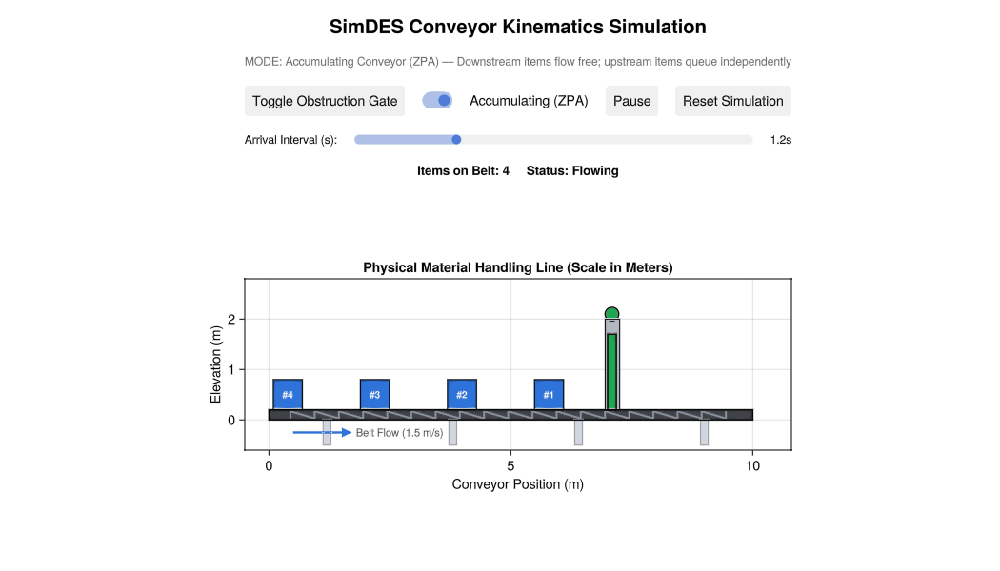

SimDES.jl
Mathematically verified discrete-event simulation engine with analytical queueing benchmarks, conveyor kinematics, and Makie visualization recipes.



Physical conveyor kinematics with GLMakie: Optical safety interlock gating, Zero-Pressure Accumulation (ZPA) queuing without item volume destruction, and smooth flow resumption.
Overview
SimDES.jl is a high-performance discrete-event simulation library in pure Julia designed for operations research, manufacturing logistics, and queueing network analysis.
Every component in SimDES.jl is grounded in closed-form numerical mathematics and backed by continuous integration tests that verify simulation output against analytical queueing theory.
Key Capabilities
- Analytical Queueing Benchmark Verification:
- Single and multi-server queues ($M/M/1$, $M/M/c$, $M/M/1/K$, $M/D/1$, $M/G/1$).
- Multi-node networks: Jackson open product-form networks with routing probability matrices.
- Non-homogeneous arrival processes: NHPP via Lewis-Shedler thinning.
- Non-preemptive Head-Of-Line (HOL) priority queues.
- Server availability degradation with stochastic failure/repair cycles.
- Fork-Join synchronization systems audited against Baccelli-Makowski bounds.
- Physical Conveyor Kinematics:
- Free-flow, zero-pressure accumulation (ZPA), and indexing conveyors.
- Physical non-overlapping headway constraints with strict zero-collision guarantees.
- Makie Package Extension (
SimDESMakieExt):- 2D process network schematics with flow vectors (
simplot). - Discrete step-charts of queue occupancy over simulated time (
plot_queue_history). - Server state schedules and Gantt timelines (
plot_gantt). - Observable-backed entity flow animation (
animate_sim).
- 2D process network schematics with flow vectors (
Installation & Dependencies
SimDES.jl depends directly on SimCore.jl for foundational simulation primitives (SimWorld, FutureEventList, event stepping, entity kinematics, and state management):
using Pkg
Pkg.add(["SimCore", "SimDES"])For interactive Makie visualizations or publication plotting, install a Makie backend (e.g. GLMakie or CairoMakie):
Pkg.add("GLMakie") # or Pkg.add("CairoMakie")Early Stage Advisory (v0.1.0)
Notice:
SimDES.jlis released at versionv0.1.0. While all queueing invariants and analytical models pass 100% automated verification, the public API may experience refinements prior tov1.0.0. Users in numerical mathematics and operations research are encouraged to audit their models and file feedback on GitHub Issues.
AI Collaboration Disclosure
This codebase was developed with the assistance of Google DeepMind Antigravity, an agentic AI pair programmer. All queueing theorems (Pollaczek-Khinchine, Erlang-B/C, Jackson's product form, Baccelli-Makowski bounds) and kinematic algorithms are empirically audited against closed-form mathematical equations.
Runnable Verification Examples
SimDES.jl ships with 6 standalone, executable examples in its examples/ directory:
| Script | Theoretical / Algorithmic Scope |
|---|---|
01_mm1_analytical_audit.jl | $M/M/1$ queue benchmarked against closed-form theory. |
02_jackson_open_network.jl | 3-station open Jackson network with product-form routing. |
03_conveyor_accumulation.jl | Zero-Pressure Accumulation (ZPA) physical line under bottleneck. |
04_nhpp_call_center.jl | Time-varying Poisson demand via Lewis-Shedler thinning. |
05_makie_visualization.jl | Makie recipes, live Observable animation, and schedule timelines. |
06_interactive_conveyor_makie.jl | Interactive GLMakie GUI with animated conveyor, obstruction gate, and ZPA/rigid modes. |
Running from the Terminal
julia --project=. examples/01_mm1_analytical_audit.jl
julia --project=. examples/06_interactive_conveyor_makie.jlRunning from the Julia REPL
using Pkg; Pkg.activate(".")
include("examples/01_mm1_analytical_audit.jl")
include("examples/05_makie_visualization.jl")
include("examples/06_interactive_conveyor_makie.jl")Environment & Local Documentation Build
- Operating System: Ubuntu 26.04.1 LTS (
x86_64) - Julia Compatibility: Julia 1.10.12 LTS and Julia 1.13.0 (all 289 queueing benchmarks passing clean, 100%)
- CI/CD Status: Automated GitHub Actions workflows are currently paused (manual trigger via
workflow_dispatchonly). - Building Documentation Locally:
julia --project=docs -e 'using Pkg; Pkg.develop([PackageSpec(path="../SimCore"), PackageSpec(path=pwd())]); Pkg.instantiate(); include("docs/make.jl")'